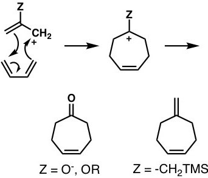
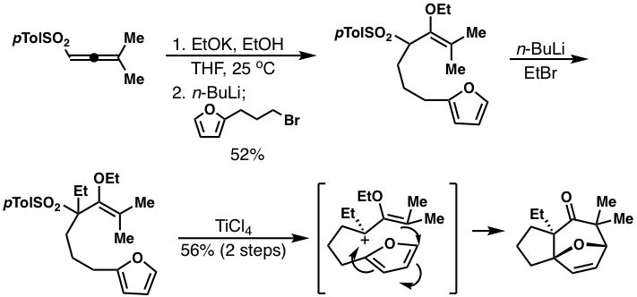
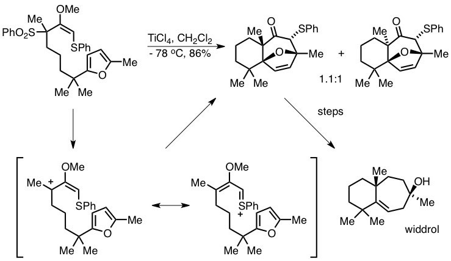
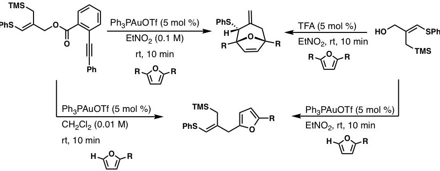
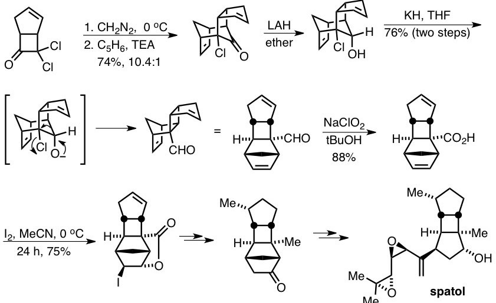
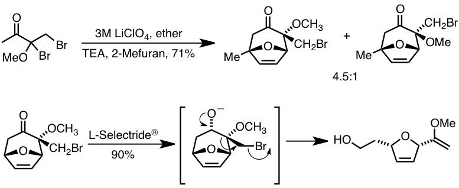
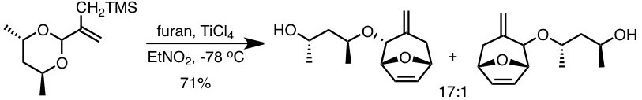
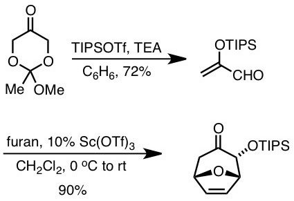
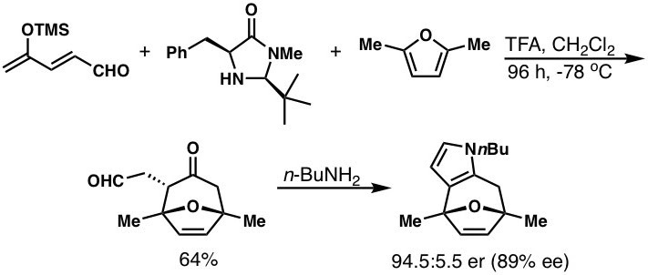
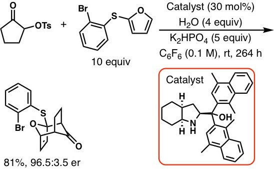

We have a myriad of research interests. Some of what is described below is strictly historical. Other areas are quite active. Still others might be described as dormant, waiting for the right person to carry them forward. We hope these summaries will make clear all that we have accomplished over these many years.
Generally, to be a good synthetic organic chemist, one has to possess a number of intellectual and technical skills. The intellectual skills can be summed up as knowing as much as possible about the five pillars of chemistry shown below. Learning these things is a never-ending process, an amazing journey of discovery.
- Structure
- Reactivity
- Mechanism
- Synthesis
- Analysis
- (4+3)-Cycloadditions
- Oxidopyridinium Ions and Nitrogenous (4+3)-Cycloadducts
- Benzothiazine / Sulfoximine Chemistry
- Chiral Molecular Tweezers
- Tröger’s Base Chemistry
- The retro-Nazarov Reaction
- Pericyclic Reactions of Cyclopentadienones
- Allenic Sulfone Chemistry and Related
- Total Syntheses
- Collaborations
I. (4+3)-Cycloadditions
One of our major research areas, still important today, is the (4+3)-cycloaddition reaction. More specifically, we are interested in the reactions of allylic cations with dienes to create seven-membered rings. In spite of being an active area of research for decades, there are still many aspects of this process that remain to be discovered, invented or refined.

A generic version of the reaction is shown above. How should the cation be generated? What should the terminating group (Z) be or what can it be? How can we render this reaction catalytic and/or enantioselective? Does the intramolecular reaction offer synthetic opportunities? We have provided some answers to all of these questions.
We began our work trying to develop the intramolecular (4+3)-cycloaddition reaction using alkoxyallylic sulfones as progenitors of the requisite allylic cations. At the time, we were looking for cation precursors that were sufficiently stable to be stored in a bottle, yet capable of generating cations upon a relatively simple activation step. This work was successful. An entire synthetic sequence is shown below.

Of course, there were some problems with this methodology. To tackle them we introduced a number of solutions, one of which we illustrate. As we removed alkyl groups from the alkoxyallylic sulfone, generating the cation became more difficult, not surprising since the sulfone is not all that good a leaving group. However, the enol ether in the starting material was increasingly subject to degradation.
To solve problems, one thing we turned to was heteroatom substitution to assist in departure of the leaving group. One example of this approach is illustrated in our total synthesis of the sesquiterpene widdrol, summarized below. More importantly, this work led to other attempts to generate vinylthionium ions for both intramolecular and intermolecular (4+3)-cycloaddition reactions, one of which involved a domino Pummerer/(4+3)-cycloaddition process.

One of our more recent contributions in this area involved a gold-catalyzed reaction that also led to the development of a simple acid-catalyzed reaction. We hope to investigate chiral acids to develop a catalytic, enantioselective version of this reaction.

Well, at one point we wanted to examine every heteroatom possible in this context. This proved impossible, based on available resources and the fact that other people were interested in this reaction. We managed some contributions, however.
We got into halogen-substituted oxyallylic cations but wanted to add our own signature to this area, so we worked on the tandem (4+3)-cycloaddition/quasi-Favorskii process, which focused on cyclic dienophiles in the reaction. An example is shown below.

We made a number of contributions to the generation and cycloaddition reactions of vinyloxocarbenium ions. One approach was solvolytic. In the example shown, we parlayed the cycloaddition product to a substituted dihydrofuran using a Grob fragmentation.

Other efforts made use of allylic acetals. We were the first to report that a chiral allylic acetal could lead to (4+3)-cycloadducts diastereoselectively.

We also used aldehydes as direct progenitors of dienophiles for (4+3)-cycloadditions. The use of a catalytic amount of Lewis acid is a highlight here. It points to the possibility of developing an asymmetric catalytic process based on this approach.

Although others have made contributions to (4+3)-cycloadditions using nitrogen-stabilized cations as dienophiles, our efforts have been more limited. However, one contribution was a breakthrough in the area. As shown below, we introduced the first asymmetric catalytic (4+3)-cycloaddition based on iminium ion catalysis. This chemistry has been used by others in the synthesis of a number of natural products.

Much more recently, we reported another asymmetric, catalytic (4+3)-cycloaddition reaction whose stereoselectivity appears to derive from hydrogen bonding between the catalyst and the reactive dienophile. And this by no means covers all that we have done.

We seek new sources of allylic cations, catalytic and asymmetric procedures, the study of new intramolecular processes and the application of these methodologies to problems in synthesis and medicinal chemistry. Our comprehensive Organic Reactions chapter on (4+3) cycloadditions of allylic and related cations (2024) and a 2026 Tetrahedron account summarize the field. Do you have any ideas? Want to work on them with me?
Selected papers: #9, #19, #43, #76, #93, #111, #121, #148, #152, #153, #180, #202, #210, #223, #228
II. Oxidopyridinium Ions and Nitrogenous (4+3)-Cycloadducts
Oxidopyridinium ions, readily prepared from simple pyridines such as 5-hydroxynicotinic acid, can serve as the four-atom partner in (4+3)-cycloadditions with dienes. We reported the first (4+3)-cycloaddition reactions of N-alkyl oxidopyridinium ions (2017), giving direct access to nitrogen-bridged seven-membered rings, and published a detailed Organic Syntheses procedure for the process.
Since then we have extended this chemistry to the 7-azabicyclo[4.3.1]decane ring system, studied the origins of endo selectivity together with computational collaborators, converted the cycloadducts into tropane skeleta by intramolecular photocycloaddition, and developed oxidative functionalization at the bridgehead. Intramolecular versions of the reaction are the basis of our approach to the Daphniphyllum alkaloid daphnicyclidin A, which culminated in the first synthesis of its ABCE ring substructure. Computational work continues to guide our understanding of these and related cycloadditions.
Selected papers: #204, #213, #216, #218, #219, #220, #221, #222, #227
III. Benzothiazine / Sulfoximine Chemistry
Our work in the area of benzothiazines and sulfoximines began as an effort in the selective ortho functionalization of anilines using sulfonimidoyl chlorides derived from—what else—anilines. It is a classic piece of chemistry, if I say so myself, which evolved into a nice application of the Buchwald–Hartwig reaction that enabled the formation of three bonds in one step in the synthesis of enantiomerically pure benzothiazines.
Benzothiazines proved to be versatile intermediates. Intramolecular, stereoselective additions of sulfoximine carbanions to α,β-unsaturated esters were used in syntheses of pseudopteroxazole, erogorgiaene, curcumene and curcuphenol, and routes to chiral cyclobutanes, 4-substituted quinolones and fluorescent 7-amino-2,1-benzothiazines. Related work includes palladium-catalyzed and microwave-assisted N-arylation of sulfoximines, an expedient synthesis of sulfinamides, chiral cyclic sulfinamides, S-alkynyl sulfoximines, and an unusual C–H activation (1,5-hydrogen migration) in S-alkenyl sulfoximines. Most recently, with Sachin Handa’s group, we have explored fast N-functionalization of sulfoximines in aqueous media.
Selected papers: #6, #10, #68, #96, #113, #130, #160, #163, #167, #211, #215, #226
IV. Chiral Molecular Tweezers
The ideas behind our work in chiral molecular tweezers, or molecular clefts, were inspired by Kagan’s ether. The idea was to combine Kagan’s ether units in various ways to make species that were chiral and capable of the discrimination of enantiomers. We developed synthetic methods for Kagan’s ether analogues, determined the crystal structures of tweezers with included guests, assigned absolute configuration by CD spectroscopy, and prepared a chiral molecular square with two organic corners. Charge-transfer catalysis was also part of the plan back in the day, but that work was never performed. It may be in the future, but the auspices say otherwise.
Selected papers: #11, #13, #15, #30, #53, #65, #105
V. Tröger’s Base Chemistry
Tröger’s base is a rigid, C2-symmetric, chiral diamine whose shape makes it an attractive scaffold for ligands and molecular recognition. We reported the first metalation of Tröger’s base and used sequential alkylation to prepare congeners designed as chiral ligands, including derivatives bearing pendant donor arms. We also discovered a demethylenation of Tröger’s bases with concomitant hydrazine formation.
In a long-running collaboration with Kenneth Wärnmark (Lund) and Victor Snieckus (Queen’s), we have explored twisted amide and bis-lactam analogues of Tröger’s base, including endo functionalization and the synthesis of an inverted crown ether, protocols for exo-mono and exo,exo-bis functionalization of the diazocine ring, the resolution and absolute configuration of a twisted bis-lactam, and carbamoyl derivatives that undergo exo–endo isomerization.
Selected papers: #45, #69, #119, #164, #168, #170, #188, #191, #196, #212
VI. The retro-Nazarov Reaction
The Nazarov reaction closes a pentadienyl cation to a cyclopentenyl cation. We asked whether the process could be run backwards and, in 2002, reported the retro-Nazarov reaction: ring opening of suitably substituted cyclopentenyl systems to give dienones. Combined computational (with Peter Schreiner) and experimental studies defined its mechanism and scope, and a torquoselective version provided a stereospecific synthesis of dienones.
Selected papers: #89, #104, #106, #110
VII. Pericyclic Reactions of Cyclopentadienones
Cyclopentadienones are antiaromatic, highly reactive dienes. We developed ways to generate them from 2-bromocyclopentenones and studied their pericyclic chemistry: intermolecular [4+2]-cycloadditions, intramolecular dimerizations, and electrocyclic reactions in which relief of antiaromaticity (“deantiaromatization”) serves as a driving force, including diastereoselective examples analyzed computationally. More recently, alkyl 2-hydroxy-3-oxocyclopent-1-enecarboxylates and a 2-bromo derivative (Organic Syntheses) have provided convenient entries to these intermediates.
Selected papers: #79, #116, #118, #129, #132, #206, #209
VIII. Allenic Sulfone Chemistry and Related
We found that propargylic sulfinates undergo silver-catalyzed [2,3]-sigmatropic rearrangement to allenic sulfones, a reaction later extended to copper catalysts, silver- and copper-exchanged USY zeolites, and documented in Organic Syntheses. Allenic sulfones turned out to be versatile building blocks: phosphine- and palladium-catalyzed isomerizations give 2- and 1-arylsulfonyl-1,3-dienes regiodivergently (with detailed mechanistic studies), silver-catalyzed cyclizations give dihydrofurans, allenyl sulfonamides give 3-arylsulfonyl-3-pyrrolines, and related chemistry provides dihydrofuran-3(2H)-ones and α′-hydroxydienones. Current work is exploring electrocyclization reactions of these compounds.
Related conjunctive reagents, 2-borylated allylic sulfones, can be alkylated, isomerized and used in Suzuki–Miyaura couplings and in the synthesis of functionalized cyclic boronates.
Selected papers: #137, #159, #172, #177, #178, #179, #183, #187, #189, #192, #195, #198, #199, #201, #205, #208
IX. Total Syntheses
Methodology is best tested by using it. Targets completed or approached using chemistry developed in our laboratory include:
| Target | Key chemistry | Ref. |
|---|---|---|
| Aphanamol | Intramolecular (4+3)-cycloaddition | #52 |
| (+)-Dactylol | Diastereoselective intramolecular (4+3)-cycloaddition | #70, #115 |
| Spatol (formal, racemic) | (4+3)-Cycloaddition approach to the spatane ring system | #80 |
| (±)-Sterpurene | (4+3)-Cycloaddition | #90 |
| Widdrol | Intramolecular (4+3)-cycloaddition of a vinylthionium ion | #101 |
| Tricycloclavulone (carbocyclic core) | (4+3)-Cycloaddition / quasi-Favorskii process | #111 |
| (+)-Curcumene, (+)-curcuphenol (formal) | Benzothiazine chemistry | #99 |
| Erogorgiaene (formal) | Benzothiazine chemistry | #109, #138 |
| Pseudopteroxazole | Benzothiazine chemistry | #113, #147 |
| Buddledone A | 11-Membered ring-closing metathesis | #166 |
| Hamigeran B, elisapterosin B, floresolide B (studies) | Oxidative cyclization; Friedel–Crafts alkylation; benzothiazines | #155, #154, #161 |
| Daphnicyclidin A (ABCE ring substructure) | Intramolecular (4+3)-cycloaddition of an oxidopyridinium ion | #220, #221 |
X. Collaborations
We enjoy working with colleagues across chemistry and beyond, including computational studies of reaction mechanisms (Krenske, Houk, Schreiner, Cramer, Singleton, Brorsen), fluorinated sucrose analogues for PET imaging of sugar transport in plants (Braun, Jurisson), radiochemistry (Hennkens, Jurisson), and sustainable micellar catalysis (Handa).
Selected papers: #143, #151, #171, #175, #181, #182, #186, #200, #224, #225